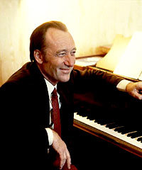

Родион Щедрин, композитор
Родион Щедрин - один из самых крупных и всемирно известных композиторов второй половины XX – начала XXI века. "...Мы прогневали Господа Бога. Прогневали всей нашей историей. То, что натворили в 1917 году и в обществе, и в душах людей, и в сознании, - вот за это мы платим. И, думаю, долго будем платить. Не знаю, наверное, какие-то рецепты лечения этого недуга есть. Может, есть мудрецы, которые их знают?.." "Я не пророк и не берусь ни диагнозов ставить, ни советов давать, как эти болезни лечить. Многое мы утеряли, долго теряли. Чтобы восстанавливать, годы пройдут. Какие-то ростки вижу. Смотрите, мир сейчас заполнен русскими. То есть уже вентиляция есть, и это огромный шанс. Те же декабристы побывали в Европе в первую Отечественную войну и многое для себя поняли, уяснили... Не уверен, что затеянное ими было правильно. Но что-то в обществе тогда сдвинулось. И сейчас не может не сдвинуться. Плюс техническая революция. Кнопку на компьютере нажал - можно получить любую информацию, если ты не ленивый. Это колоссальная роскошь! Люди должны этому возрадоваться. И быть добрее друг к другу. Это звучит довольно банально, но истина от повторений не тускнеет!" "Главное желание - вторая жизнь."
Родион Константинович Щедрин родился 16 декабря 1932 года в Москве. Его отец – выпускник Московской консерватории, композитор и педагог. Дед - православный священник. Музыкой Р. Щедрин был окружён с самого детства: слышал игру отца на скрипке, инструментальное трио в составе отца и его братьев. Первым учителем музыки Р. К. Щедрина стал его отец Константин Михайлович. "По рождению я москвич. Хотя истоки рода идут из маленького городка Алексина, что в двухстах километрах от столицы. Этот город вошел в историю жестокой битвой с татарами. Русские стояли на высоком берегу Оки, татары в низине. И те русские воины, которым удавалось достичь своего берега, приговаривали «рад будешь». Отсюда, по утверждению старожилов, и пошло еще с XIII века название Радбужской набережной. Дом моей бабушки и моего отца стоял как раз на ней. И каждое лето меня вывозили туда, на Оку. Красивейшие это были места: сосновые боры, песчаные пляжи, заливные луга. Не зря облюбовали эти просторы артисты Малого театра. На отдыхе они разыгрывали шарады, ставили водевили, для которых им была необходима музыка. Алексин был славен еще и оркестром братьев Щедриных. Это мои дядья. Один отцовский брат играл на кларнете, другой — на контрабасе, третий на виолончели. А всего у отца было семеро братьев.." Про отца:"У него от природы были гигантские музыкальные способности, потрясающая память. Все, что он слышал, мог воспроизвести — на любом инструменте, самодеятельно, не учась. Великая русская актриса Вера Николаевна Пашенная, человек добрейшей души, привезла отца в Москву и показала тогдашнему ректору Московской консерватории Михаилу Михайловичу Ипполитову-Иванову. Тот проверил его данные — фантастические! Все эти легенды: про Моцарта, который записал по памяти однажды услышанную мессу, про Рахманинова, который «Князя Игоря» восстановил по памяти, — вовсе не преувеличение, а чистая правда. Вот такая же память была у моего отца. Уж на что у меня память вроде бы неплохая, но рядом с отцом я — ноль. Ипполитов-Иванов взял отца на подготовительный курс консерватории, и Вера Николаевна два года содержала его на свои деньги. Потом отец написал такую музыкальную задачу на экзамене, что Ипполитов-Иванов перевел его на теоретико-композиторский факультет. Только год окончания оказался неподходящим для творчества — 1917-й. И отец уехал обратно в Алексин, организовал там первую музыкальную школу, которая сейчас носит его имя.".
"Фольклорист — всегда коллекционер, но я все-таки фольклор специально не собираю. Я его извлек не из книг и фолиантов, а из слуха и жизненного опыта. Хотя я родился в Москве, но все свое детство — от снега до снега — я проводил в городке Алексин Тульской области. Мой отец кончил тульскую духовную семинарию. Два его брата там преподавали, а мой дед был священником в Алексине. Тогда же не было ни телевизора, ни даже картонной радиотарелки. А было звучание пастухов через Оку — другого способа собрать коров не существовало. Я помню, как у соседей кто-то умирал, приглашали плакальщицу. И вот она приходила, «вопила» причитания. Или пели терпкие песни с не очень цензурными текстами, обязательно праздники устраивали семейные, свадьбы играли. Я все это на всю жизнь запомнил. В моем познании мира, в том числе музыкального, оно сыграло огромную роль. Только позже я открыл классическую музыку, Бетховена, Чайковского, Баха".
В 1941 году был отдан в Центральную музыкальную школу-десятилетку при Московской консерватории. Реально же заниматься по фортепиано начал частно — у М. Л. Гехтман.Во время Великой Отечественной войны (в октябре 1941 года) семья Щедриных была эвакуирована в Самару. В этот же город был эвакуирован и Д. Шостакович, завершивший в нем свою знаменитую Седьмую симфонию; юному Родиону довелось услышать её на генеральной репетиции под управлением С. Самосуда.
Д. Шостакович и К. Щедрин (отец композитора) вели работу в Союзе
композиторов, первый — как председатель, второй — как ответственный
секретарь. Шостакович заботливо помогал семье Щедриных в трудных бытовых
и иных обстоятельствах.
"Моё детство военное мне действительно в высшей степени памятно. Отец, как и все тогда в России, ушёл в ополчение. А мы с мамой оставались в Москве до 17 октября 1941 г. Жили мы тогда напротив Гознака, на Мытной улице. Помню, как там, на Гознаке, жгли деньги, облигации, - немцы подходили к Москве. И мы, мальчишки, бегали, ловили обгорелые куски ассигнаций... Брат матери был крупным энергетиком. И нас вместе с его семьёй отправили в эвакуацию в Куйбышев. Помню, как ходил на приволжские скосы, где ветер продувал до костей, и искал замёрзшую картошку. Потому что есть было совсем нечего! А когда мы вернулись в Москву, я дважды убегал на фронт. До Кронштадта. Мне очень хотелось быть военным моряком. Так что я повидал достаточно. И страшные эти звуки, крики и запахи военные... Война ведь пахнет... Запах у неё страшный. Он потом долго в тебе сидит. @
"В 1941-м мне еще не исполнилось и девяти. Попал в эвакуацию. Отца контузило на фронте, и он приехал к нам в Куйбышев. К этому времени Дмитрий Дмитриевич Шостакович основал там Союз композиторов и попросил отца быть ответственным секретарем Союза, по существу — его личным секретарем. Отец помогал ему и в быту, и в творчестве. Например, расписывал оркестровый материал. Вместе с талантливым музыкантом Левоном Атовмяном готовил материал Седьмой симфонии. Помню, меня взяли в Куйбышевский оперный театр на генеральную репетицию симфонии". О Шостаковиче: "Он для меня — бог. И как музыкант, и как человек. Он был бесконечно добр и выручал не только моих близких и дальних родственников, но и многих других людей из всевозможных бед, которые советская власть им уготовила. Стольких спас, стольким помог в самые тяжелые моменты жизни! У него на всех хватало времени. Я счастлив, что мог общаться с величайшим музыкантом и поразительным человеком и даже провести с ним вместе одно лето в Дилижане, в Армении."
Продолжил свое музыкальное образование Щедрин в Московском хоровом училище (1944—1950), возглавляемом А. В. Свешниковым.
"Мамин брат-энергетик (в войну ему дали чин генерал-майора) разослал мои
фото - меня нашли и в арестантском вагоне доставили в Москву. Сладу со
мной не было никакого. Я хотел быть только моряком. Мои документы
послали в Нахимовское училище. Но тут на моё счастье в Москве открылось
хоровое училище. И отец решил: не надо сыну быть моряком, лучше -
музыкантом".
"Хоровое училище это открыли в 1944 г., когда будущее страны ещё было, скажем так, «зыбковато». Но власти уже тогда думали о возрождении культуры. 6 лет я жил в интернате при училище. Было нас человек 50. Наш руководитель - легендарный Свешников - спуску нам не давал. Каждый день - полтора часа хоровых спевок. Нельзя облокотиться ни на что - ни на рояль, ни на товарища, ни на стенку. Если что-то не так, он грозно «лупил» двумя средними пальцами по ключице. Это не было травмой - это было назиданием, и очень полезным. Дисциплина у нас была практически полувоенная. Но благодаря этому мы получили и замечательное образование, и воспитание. Я благодарю Господа Бога за тот шанс, что был мне послан. Он сделал меня человеком."
В 1950—1955 годах Р. К. Щедрин учился в МГК имени П. И. Чайковского, которую с отличием окончил по двум специальностям: композиции (класс Ю. А. Шапорина) и фортепиано (класс Я. В. Флиера).
"...на третьем курсе консерватории я написал свой первый фортепианный концерт. Восприняли его неоднозначно. Часть комиссии была настроена «против», другая — наоборот «за». Она-то и победила, и мне предложили самому со студенческим оркестром исполнить этот концерт. Дирижировал тоже студент — Геннадий Рождественский. Концерт получил высокую оценку у публики и у ряда музыкантов. И мне, студенту, предложили сыграть этот концерт на проходившем тогда пленуме Союза композиторов, посвященном как раз молодежи. Это был Большой зал консерватории, Рождественский дирижировал уже филармоническим оркестром, словом, концерт прошел еще лучше. И я по почте получаю письмо: Секретариат Союза композиторов СССР постановил принять в члены Союза композиторов СССР Щедрина Родиона Константиновича. Для студента четвертого курса, даже без заявления о приеме — это была огромная удача и абсолютный нонсенс".
В 1959 году там же окончил аспирантуру (рук. Ю. А. Шапорин).
2 октября 1958 года Майя Плисецкая и Родион Щедрин поженились.
Про встречу с М. плисецкой: "Впервые я Майю Михайловну не увидел, а услышал: благодаря Лиле Брик. У Лили был художественный салон. (Большевики все салоны закрыли и салонников отправили на Соловки и еще дальше, но Лилин салон каким-то образом существовал.) У нее было фантастическое чутье: она нюхом определяла способности людей. Брик в первый раз услышала Маяковского, когда он ухаживал за ее сестрой Эльзой, но Лиля его отбила. Она сразу сказала ему: 'Вы - гений'.
Лиля была состоятельной - после смерти Маяковского по личному распоряжению Сталина она получала треть денег от публикации произведений поэта. (Потом Хрущев выплату отменил, и Лиля обеднела, стала распродавать вещи.) А тогда Брик всегда давала гостям на такси. Для студентов это был щедрый подарок. Мы ездили на общественном транспорте, а деньги тратили на что-то другое. Лиля одна из первых в Москве купила магнитофон - громаднейшую бандуру - и стала коллекционировать голоса друзей дома. Однажды Брик спросила меня: 'Хотите послушать, как молодая балерина поет 'Золушку' Прокофьева?' Я согласился - скорее из корректности. И тут слышу чистый прекрасный голос: 'Кто это?' - 'Молодая красивая балерина Майя Плисецкая'.
Вскоре я встретил ее - рыжеволосую, зеленоглазую, с длинной шеей: Она попросила меня записать на ноты музыку чаплинского фильма 'Огни рампы'. Но балет на эту музыку Майя по каким-то причинам так и не сделала, и я обиделся - работа была проделана немалая.
А потом Радунский, с которым мы вместе работали над балетом 'Конек-Горбунок', предложил мне пойти в Большой театр. Он хотел, чтобы я лучше проникся сутью хореографического искусства. На следующий день я увидел Майю в тренировочном классе. Она была в очень эффектном купальнике. Тогда таких еще никто не носил. Я, как теперь модно говорить, 'запал' окончательно. Я был очень настойчивым - когда мужчине нравится женщина, его мало что может удержать. И Майя ответила мне взаимностью". "Когда меня спрашивают, каково композиторам было при советской власти? Я отвечаю: молодые композиторы были тогда, как у Христа за пазухой. У них был спонсор - государство. А сейчас за все надо платить деньги: расписать оркестровый материал, снять зал, напечатать программки, афиши, пригласить оркестр, дирижера. Композиторам стало тяжелее, и они ушли в свои скорлупы с какой-то обидой, замкнутостью. В музыке я это ощущаю. Я даю мастер-классы в Москве, в Петербурге, в Америке, в Канаде, в Европе, и такая внутренняя закомплексованность ощущается не только в России - всюду. Среди студентов есть очень талантливые люди, но они не могут вписаться в эту жизнь: пристраиваются, кто педагогом, кто редактором, тонут в этом изменившемся мире. Сейчас ведь какой спрос на музыку: нажмешь дома на кнопку, и у тебя играет симфония Бетховена".
В 1965—1969 годах — преподаватель композиции в Московской консерватории. Среди его учеников - О. Галахов, Б. Гецелев, Г. Минчев. Щедрин прекратил работу в консерватории, войдя в конфликт с партийными деятелями теоретико-композиторского факультета. В 1968 году он отказался подписать письмо в поддержку вступления войск стран Варшавского договора в Чехословакию. "У меня был конфликт, я ушел, хлопнув дверью, потому что в 1968 году отказался подписать письмо в поддержку ввода войск в Чехословакию. Я непартийный, но на меня сразу стали давить, я ушел и хорошо сделал. И Андрей Эшпай ушел в знак солидарности со мной. Про преподавание я две вещи могу сказать задним числом. Первое — быть самим собой, но и знать технологию, которой можно научить. Конечно, в истории музыки были исключения. Например, Мусоргский мало знал ее, но это такая глыбища, которая словно пришла к нам из другой галактики. Он слушал самого себя, не прислушивался, что ему говорил композитор и критик Цезарь Кюи..."
В 1973 году Щедрин избирается на должность председателя правления Союза композиторов РСФСР. На этом посту он проработал до 1990 года, добровольно его покинув, после чего был оставлен в роли почетного председателя СК России. То, что во главе огромной российской композиторской организации столько лет стоял серьёзный композитор новаторской направленности, сыграло чрезвычайно прогрессивную роль. Велика была и его личная помощь композиторам, музыковедам, дирижёрам и др. «Долгое время Щедрин возглавлял Союз композиторов России, и мало кто знает, скольким молодым талантам отверженным, гонимым властью, помог этот человек», — написал о нем в 2002 году Владимир Спиваков в буклете музыкального фестиваля, состоявшегося по случаю 70-летия композитора. Про Союз композиторов России: "Во-первых, давайте посмотрим на его истоки: этот Союз основал Шостакович. В том же доме, в том же подъезде, где он жил. Четыре этажа на лифте — и вот его офис. Он, знавший меня с девятилетнего возраста, несколько раз мне говорил: «Я уже не очень хорошо себя чувствую, я хочу, чтобы вы... ». Для меня это была эстафета из рук очень дорогого человека, которого я считал Богом. Если Господь Бог говорит тебе: «Сядь вместо меня, подежурь», то как можно к этому отнестись? С гигантским пиететом.
И мне кажется, тут можно постараться найти формулу, которой, как думается, руководствовался Шостакович и которой мы старались следовать. Помочь коллеге, музыканту, в чем только можно помочь. Вот сейчас все начальники очень труднодоступны стали. Я испытал это на себе: меня просили за кого-то попросить, позвонить, звоню туда, жду, секретарша меня не соединяет, они заняты, государственные заботы..." О работе Союза композиторов:"Во-первых, долгие годы я оставался почетным председателем правления Союза. Во-вторых, этот Союз композиторов основал Шостакович. Союз и тогда располагался, да и по сей день находится в том же подъезде, где жил Дмитрий Дмитриевич, только пятью этажами ниже. Что делал этот Союз композиторов? Старался помочь людям. Шостакович помог очень многим — продвинуть сочинение, записать, исполнить, издать; достать путевку, устроить жену в больницу, улучшить жилищные условия — все делал Союз композиторов РСФСР. Я состою членом нескольких Академий, в том числе и Баварской — с 1976 года. В Мюнхене присутствую на их заседаниях и вижу, что там — то же самое и те же проблемы. Плюс каждый своего ученика хочет продвинуть, заказ ему дать. Чем дольше живу, тем больше убеждаюсь в том, что такие цеховые организации абсолютно необходимы." 1984 год. Когда я писал "Автопортрет", шел 1984-й год. Мне тогда казалось все безысходным.
Р. Щедрин имеет Литовское гражданство, поскольку в пору восстановления независимости Литвы литовское гражданство в виде исключения получило немало жителей других стран, в том числе – России. Это в основном были видные деятели общественной жизни, культуры, искусства, а также спортсмены и предприниматели.
Знаменитая пара Майя Плисецкая – Родион Щедрин в 1991 году из россиян получили литовские паспорта первыми. Как сейчас пробиться молодым композиторам? "Тяжело. Я думаю, нынешним поколениям очень тяжело. Я иногда даю мастер-классы, сейчас реже, но проводил их в Америке, Канаде, Европе, Китае. Это очень интересная форма общения с молодежью. И я должен сказать, что за годы общения с молодыми людьми (я сейчас в первую очередь говорю об иностранных композиторах), я «поставил» на двух-трех человек. Очень талантливые, с собственным видением, мне казалось, что из одного, грубо говоря, должен получиться мощный яркий композитор, так много в нем природа заложила. Я получаю регулярно музыкальные журналы, каталоги издательств, ищу знакомые имена — нет никого, пропали. Начал интересоваться, где они. Он, оказывается, в Массачусетсе преподает в консерватории, у него семья, дети, писать бросил..." Почему не могут сейчас пробиться талантливые: "К сожалению, главное заблуждение — корректировать свою природу, нутро, генетику, суть. Корректировать на мнение коллег, учителей и — худшее — музыкальных критиков. Они пытаются подстроиться к некой музыкальной очень сегодняшней «религии». Думаю, это бесперспективно и вредно. Мне кажется, умнее Толстого никто не сказал. Он говорил: «Какое современное? Я пишу для вечности»." Насколько Россия сейчас интегрирована в мировой музыкальный контекст? По вашим ощущениям: "Исполнительски — абсолютно интегрирована. Я бы даже сказал, что Запад интегрируется в нас. Исполнительский уровень по-прежнему высочайший. Один Мариинский театр чего стоит. Я думаю, он сегодня не имеет себе равных в мире по творческим возможностям. Что касается композиторов, трудно говорить. Музыка и те, кто ее сочиняют, переживают не лучшие времена. Мне думается, что музыка всегда ждет своего нового гения." Шедевр можно создать на заказ? "Почти все, что мы имеем в истории музыки, было написано по заказу. И уже далеко-далеко во времени определялась истинная ценность произведений. Вот, сейчас мы с Майей Михайловной (Плисецкой - прим. авт.) снимаем в Мюнхене квартиру, в ста метрах от которой находится Министерство культуры Баварии. И там установлена мемориальная доска: в этом здании состоялась премьера "Идоменея" Моцарта. В 300 метрах от нас - Министерство внутренних дел, где указано, что Шопен играл там свой Первый фортепианный концерт. Дальше, в метрах 400 от нас - еще одна мемориальная доска: на этом месте был театр, где состоялась премьера "Похищения из Сераля" Моцарта. Все расставляет по своим местам время."
Как Вам удается вдали от России создавать такую русскую, проникновенную, берущую за сердце музыку?
"Комплиментарный вопрос, но я все-таки отвечу. Солнечная система у нас одна, планета очень маленькая. Люди об этом не думают, а следовало бы. Вместо этого выдумали всю эту ерунду с границами, визами, видами на жительство...Шостакович говорил, что можно писать и в собачьей будке, лишь бы были идеи!" "Господь Бог дал мне длинную жизнь. Сен-Санс говорил: хороший композитор должен жить долго. Сам он дожил до 84 лет. Немногим из композиторов было отпущено столько лет жизни: ни Моцарту, ни Шуберту. Но я должен сказать, что когда жизнь длинная, многое успеваешь увидеть и узнать. Когда я учился, еще был жив Сталин, и мы видели его на трибуне мавзолея, как он помахивал ручкой на демонстрациях. То, что было потом, всем известно. Жизнь была непростая, негладкая, но главное - длинная. Я этому очень радуюсь. Это большая награда от Господа Бога. И еще то, что мы вместе с Майей." В ситуации, когда сужается культурное поле, сложнее творить? "У меня всегда было много работы, множество предложений. Но меня надо вынести за скобки, и даже не потому, что я одной ногой нахожусь здесь, другой - в Мюнхене. У меня чудом сложились отношения с немецким издательством "Schott". До сегодняшнего дня практически все наши композиторы - и Шостакович, и Прокофьев, и Хачатурян, Кабалевский, Шнитке, Губайдулина - являются авторами гамбургского издательства "Hans Sikorski". А я рад тому, что двадцать лет назад ушел от Сикорского. Мне помогла в этом вдова Шостаковича Ирина Антоновна и ее парижский адвокат Андрэ Шмидт. Издательству "Schott” более двухсот лет, и именно ему принадлежат права на издание Бетховена, Вагнера, Шумана, Пендерецкого, Рихарда Штрауса. В эти дни в Москву приехал владелец и руководитель "Schott " доктор Хансер-Штрекер. К моему юбилею издательство выпустило брошюру, собрав все, что я написал за эти годы, причем, со справочным материалом: кто заказал, где состоялась премьера, кто был первым исполнителем произведения".
2012 год. Москва. Фестиваль музыки Родиона Щедрина. Особую интригу фестивалю придают новые, еще не исполнявшиеся на родине
сочинения: симфонический фрагмент «Гейлигенштадтское завещание
Бетховена», Концерт для гобоя с оркестром, драматическая сцена для
голоса с оркестром «Клеопатра и змея».
"Я определил современный национальный девиз с горечью - «Обогащайтесь!». Но помимо желания человека жить комфортно, в хорошей квартире, ездить на машине с мягкими рессорами, смотреть телевизор величиной со стену, есть ещё какие-то ценности. Мне не хочется кого-то учить, менторствовать, брюзжать, но занозы в душе сидят. Я бесконечно рад, что Мариинский театр вот-вот закончит строительство новой сцены. Но так мало у нас построено! У японцев в каждом малом городе открывают роскошные концертные залы на тысячи мест. А у нас?"
Основные произведения: балеты: "Конёк-горбунок", "Кармен-сюита", "Анна Каренина", "Чайка", "Дама с собачкой";
оперы: "Не только любовь", "Мёртвые души", "Лолита", "Очарованный странник", "Боярыня Морозова", "Левша";
3 симфонии, Третья - "Лица русских сказок" с использованием образов "Дудки-самогудки", "Царевны -лягушки", "Сестрицы Алёнушки да братца Иванушки" и других;
оратории; кантаты; 5 концертов для оркестра: "Озорные частушки", "Звоны", "Старинная музыка российских провинциальных цирков", "Хороводы", "Четыре русских песни";
6 концертов для фортепиано с оркестром; другие концерты для солистов с оркестром;
гигантская музыкальная фреска «Музыкальное приношение» для органа, 3-х флейт, 3-х фаготов и 3-х тромбонов, посвященное И.С. Баху; хоровые произведения; камерно-инструментальные произведения.
Главный "путь" творчества Щедрина - русская тематика. Щедрин о себе: "Я русский человек, все мои корни здесь..." Его оперы и балеты написаны исключительно на сюжеты крупнейших отечественных писателей – Гоголя, Чехова, Л.Толстого, В. Набокова, Лескова. Он автор опер «Мертвые души» и «Лолита», хоровой русской литургии «Запечатленный ангел» и русской хоровой оперы «Боярыня Морозова», концертов для оркестра «Озорные частушки» и «Звоны», «Российских фотографий» для струнного оркестра, «Стихиры на 1000-летие крещения Руси», хоровых «Строф “Евгения Онегина”» и «Казни Пугачёва».
Все балеты Щедрина связаны с танцем его жены - несравненной Майи Плисецкой. Щедрин с огромным мастерством вводит в свои произведения "руссизмы": колокольный звон, треньканье балалайки, голошение плакальщиц, стихиры, молитвы, частушки, гусельные переборы, пастушьи наигрыши, музыку цирков, цыганскую песню, аппликации из Чайковского. В то же время аура его музыки остро современная.
М. Ростропович о Щедрине: "Королём современного оркестра называют его
профессионалы, имея ввиду максимальную звуковую выразительность при
максимальной концентрации и экономии средств". Музыка Щедрина "заряжена" огромной энергией, солнечной жизненной силой. Это одна из основных причин популярности его музыки.
Издательство Sikorski назвало Щедрина одним из самых исполняемых композиторов нашего времени.
Превосходный пианист, Р. Щедрин нередко был первым исполнителем своих фортепианных концертов, сонат, 24 прелюдий и фуг.
Интерпретаторы произведений Р. Щедрина:М. Плисецкая и М.Ростропович,
Л.Маазель и Л.Бернстайн,
Е.Светланов и Ю.Темирканов,
В.Федосеев и Г.Рождественский,
К.Кондрашин и Л.Стоковский,
А.Гаук и В.Гергиев, М.
Плетнев и В.Спиваков,
М.Янсонс и Б.Тевлин, В.Минин и Ю.Башмет,
Д.Мацуев, Д.Герингас, Д.Ситковецкий... Почётные звания и премииГосударственная премия СССР (1972)
Член-корреспондент Баварской академии изящных искусств (1976)
Почетный член Общества Ф.Листа (США, 1979)
Народный артист СССР (1981)
Почетный член Академии изящных искусств ГДР (1982)
Ленинская премия (1984)
Почетный член Международного Музыкального совета (1985)
Член Берлинской Академии искусств (1989)
Государственная премия России (1992)
Премия им. Д.Д.Шостаковича (Россия, 1992)
Премия Crystal Award Всемирного экономического форума (Давос, 1995)
Почетный профессор Московской консерватории (1997)
«Композитор года» Питтсбургского симфонического оркестра (2002)
Орден «За заслуги перед Отечеством» III степени (2002). Источники статьи: Википедия Интервью с Р. Щедриным
Другое интервью
Ещё одно интервью
Интервью
|